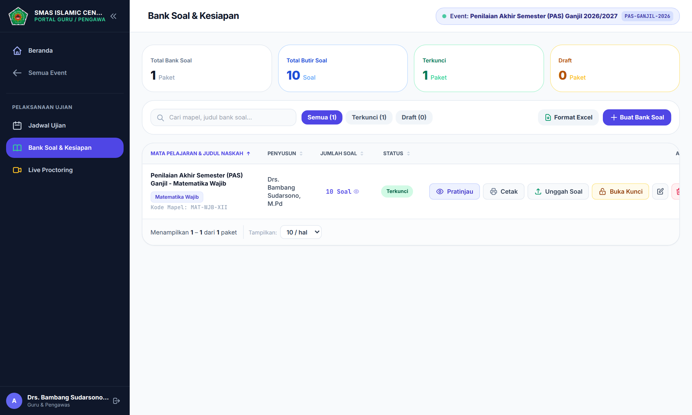
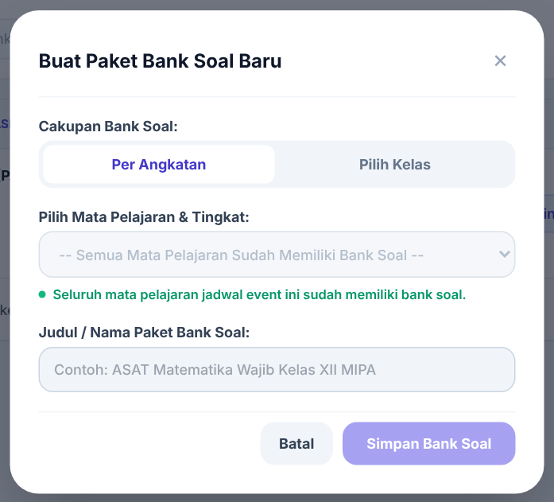
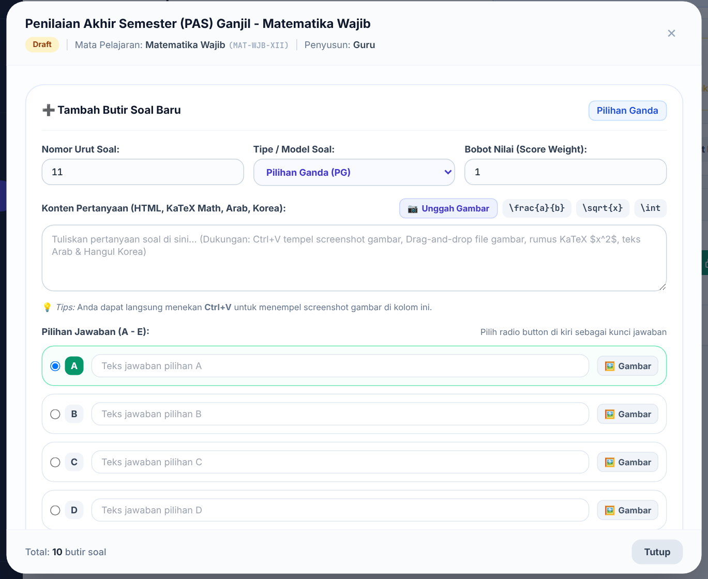
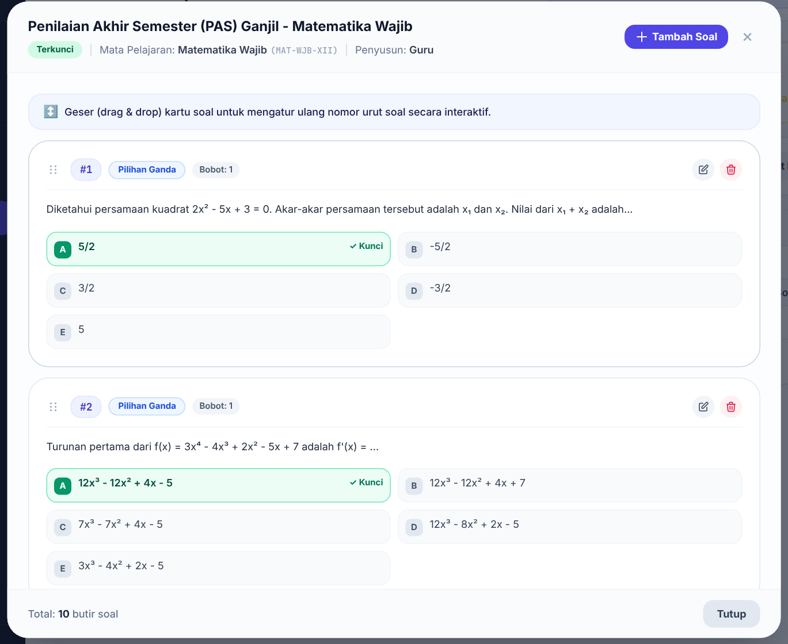
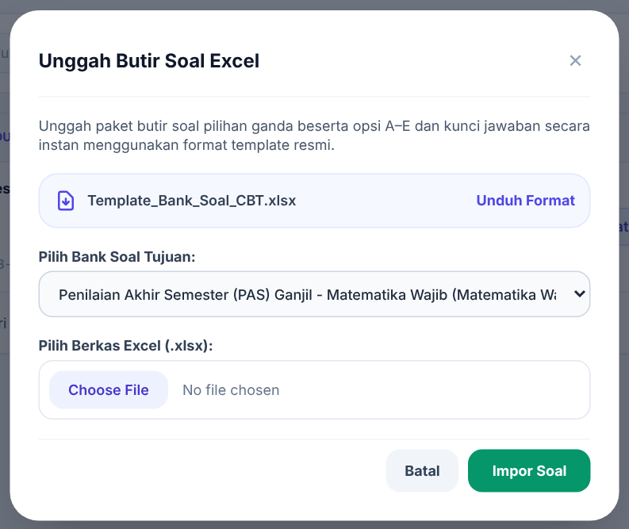
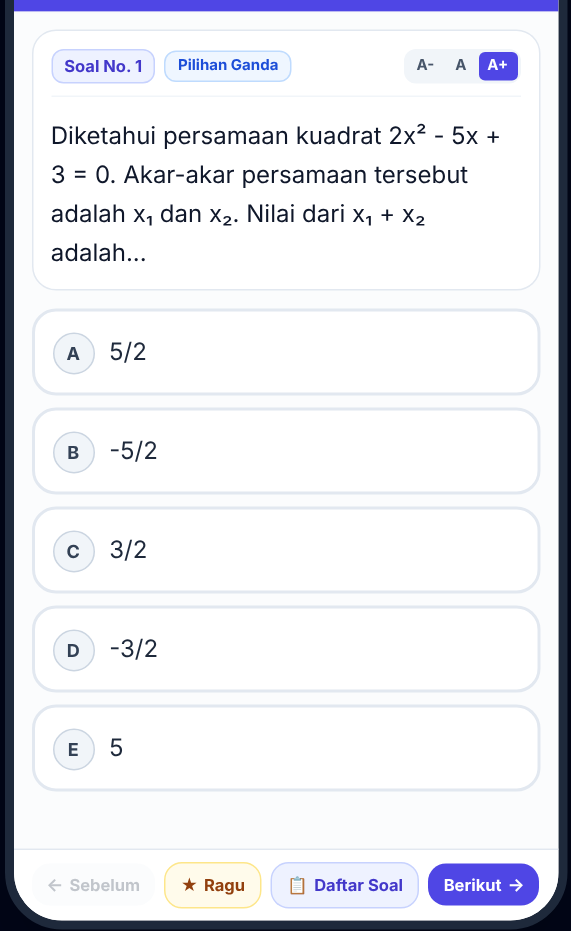
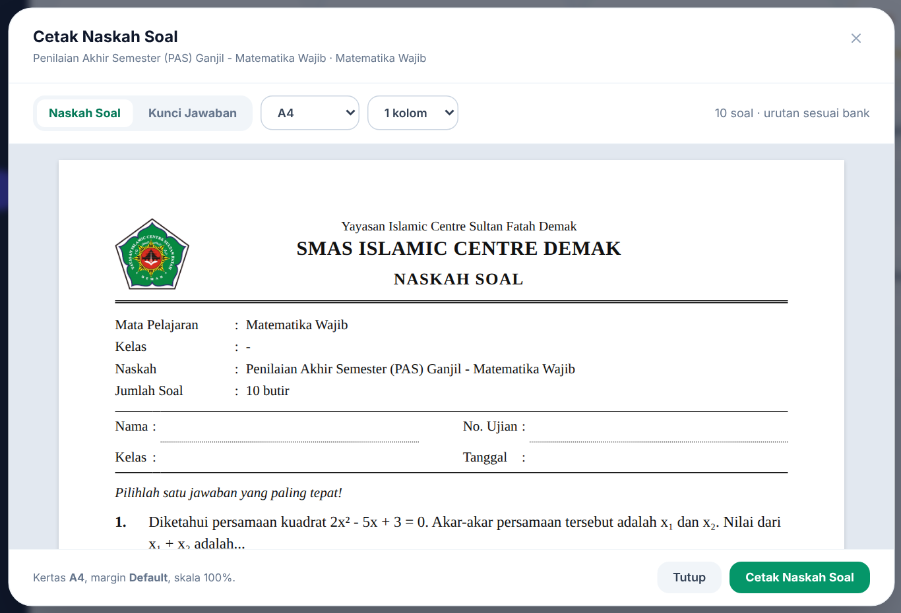
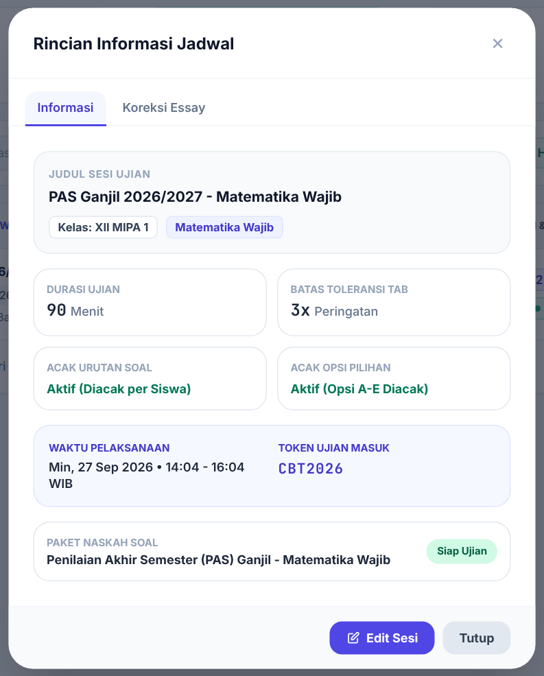

Isi Panduan
- 1Alur Penyusunan SoalUrutan kerja dari naskah kosong sampai siap diujikan
- 2Beranda GuruMembaca tugas yang perlu diselesaikan
- 3Membuat Bank SoalSatu naskah untuk satu mata pelajaran
- 4Menambah Soal Satu per SatuPilihan ganda, jawaban singkat, dan essay
- 5Mengunggah Soal dari ExcelMengisi banyak soal sekaligus
- 6Memeriksa dan Mengunci NaskahPratinjau tampilan siswa dan penguncian
- 7Mencetak Naskah dan Kunci JawabanCadangan kertas dan arsip
- 8Menilai Jawaban EssayKoreksi manual setelah ujian
Bab 1Alur Penyusunan Soal
Naskah soal baru bisa dipakai ujian setelah dikunci. Ikuti urutan berikut.
- Buat bank soal untuk mata pelajaran yang Bapak/Ibu ampu (Bab 3).
- Isi butir soal satu per satu (Bab 4) atau unggah dari Excel (Bab 5).
- Periksa dengan Pratinjau, seperti yang akan dilihat siswa (Bab 6).
- Kunci naskah. Status berubah dari Draft menjadi Terkunci (Bab 6).
- Admin kurikulum menautkan naskah ke jadwal ujian, lalu mengaktifkan jadwalnya.
- Cetak naskah dan kunci jawaban bila diperlukan (Bab 7).
- Setelah ujian, nilai jawaban essay (Bab 8).
| Status naskah | Artinya |
|---|---|
| Draft | Masih disusun. Soal bisa ditambah, diubah, dihapus, atau diunggah dari Excel. Jadwal yang memakai naskah ini tidak bisa diaktifkan dan tidak tampil bagi siswa. |
| Terkunci | Siap diujikan. Soal tidak bisa diubah. Naskah bisa dicetak. |

Bab 2Beranda Guru
Kapan dipakai: setiap kali masuk, untuk melihat pekerjaan yang belum selesai.

| Kartu | Artinya |
|---|---|
| Jadwal Saya | Jadwal ujian mata pelajaran yang Bapak/Ibu ampu. |
| Bank Soal Saya | Jumlah naskah, beserta berapa yang sudah terkunci dan masih draf. |
| Perlu Dibuat | Jadwal yang belum memiliki bank soal. |
| Perlu Diselesaikan | Bank soal yang masih kosong atau belum dikunci. |
| Tugas Mengawasi | Jadwal yang menugaskan Bapak/Ibu sebagai pengawas. |
Bagian Perlu Tindakan merangkum pekerjaan tersebut beserta tombol untuk langsung mengerjakannya. Bila semuanya selesai, tertulis "Semua tugas Anda sudah beres."
Menu Bank Soal & Kesiapan dan Jadwal Ujian muncul setelah Bapak/Ibu memilih event ujian lewat tombol Pilih Event.
Bab 3Membuat Bank Soal
Kapan dipakai: sekali untuk setiap mata pelajaran dan angkatan yang diujikan pada suatu event.

- Buka menu Bank Soal & Kesiapan, lalu klik Buat Bank Soal.
- Pilih Cakupan Bank Soal:
- Per Angkatan: satu naskah untuk seluruh kelas di tingkat tersebut. Pilihan ini yang umum dipakai.
- Pilih Kelas: naskah khusus untuk kelas tertentu. Kelas yang dicoret sudah punya bank soal untuk mapel itu.
- Pilih mata pelajaran, lalu isi Judul / Nama Paket Bank Soal, misalnya ASAT Matematika Wajib Kelas XII.
- Klik Simpan Bank Soal. Naskah baru berstatus Draft.
Bab 4Menambah Soal Satu per Satu
Kapan dipakai: jumlah soal sedikit, atau soal memuat gambar dan rumus.

- Klik angka … Soal pada kolom Jumlah Soal untuk membuka daftar butir soal, lalu klik Tambah Soal.
- Periksa Nomor Urut Soal, pilih Tipe / Model Soal, dan isi Bobot Nilai (biasanya 1).
- Tulis pertanyaan di kolom Konten Pertanyaan. Hasilnya langsung terlihat di Pratinjau Tampilan Konten.
- Isi jawaban sesuai tipe soal (lihat tabel), lalu simpan.
| Tipe soal | Cara mengisi jawaban |
|---|---|
| Pilihan Ganda (PG) | Isi teks pilihan A sampai E. Klik bulatan di kiri pilihan yang benar sebagai kunci. Tiap pilihan bisa diberi gambar lewat tombol Gambar. |
| Jawaban Singkat | Isi kunci jawaban. Pisahkan variasi jawaban yang diterima dengan tanda |, contoh Nusantara|IKN|Ibu Kota Nusantara. Huruf besar atau kecil tidak berpengaruh. |
| Essay / Uraian | Isi pedoman penilaian (opsional) sebagai acuan saat mengoreksi. Soal essay dinilai manual (Bab 8). |
Gambar, rumus, dan teks khusus
- Gambar: tekan Ctrl+V di kolom pertanyaan untuk menempel screenshot, seret berkas gambar ke kolom, atau klik Unggah Gambar.
- Rumus: tulis di antara tanda dolar, contoh $x^2 + 1$. Gunakan $$ … $$ agar rumus tampil di baris tersendiri. Tombol \frac{a}{b}, \sqrt{x}, dan \int menyisipkan pola rumus yang sering dipakai.
- Teks Arab dan Korea dapat diketik atau ditempel langsung.
Mengubah, menghapus, dan mengurutkan soal

Di daftar butir soal, gunakan ikon pensil untuk mengubah dan ikon tempat sampah untuk menghapus. Seret kartu soal ke atas atau ke bawah untuk mengubah nomor urut.
Bab 5Mengunggah Soal dari Excel
Kapan dipakai: soal sudah disiapkan di spreadsheet dan jumlahnya banyak.

- Klik Unggah Soal pada baris bank soal.
- Klik Unduh Format untuk mengambil Template_Bank_Soal_CBT.xlsx, lalu isi soal di berkas itu.
- Pastikan Bank Soal Tujuan sudah benar, lalu pilih berkas Excel.
- Klik Impor Soal. Muncul pemberitahuan jumlah soal yang berhasil diimpor.
| Kolom template | Isi |
|---|---|
| No | Nomor urut soal. |
| Tipe Soal | PG, ISIAN, atau ESSAY. Bila kosong, dianggap PG. |
| Pertanyaan (Soal) | Teks soal. Rumus boleh ditulis dengan tanda dolar. |
| Opsi A – Opsi E | Pilihan jawaban untuk soal PG. Kosongkan untuk ISIAN dan ESSAY. |
| Kunci / Jawaban Benar | PG: huruf kunci, misalnya C. ISIAN: jawaban, variasinya dipisah |. |
| Pedoman Rubrik (Essay) | Pedoman penilaian untuk soal essay. |
| Bobot | Nilai soal. Bila kosong, dianggap 1. |
Bab 6Memeriksa dan Mengunci Naskah
Pratinjau tampilan siswa

Klik Pratinjau pada baris bank soal untuk mencoba naskah seperti siswa. Periksa teks, gambar, rumus, dan kunci jawaban. Jawaban di pratinjau tidak tersimpan.
Mengunci naskah
- Klik Kunci Naskah pada baris bank soal.
- Baca konfirmasinya, lalu klik Kunci Naskah. Status berubah menjadi Terkunci.
Untuk memperbaiki soal, klik Buka Kunci. Status kembali menjadi Draft; setelah selesai, kunci lagi.
Bab 7Mencetak Naskah dan Kunci Jawaban
Kapan dipakai: menyiapkan cadangan ujian kertas atau arsip naskah. Hanya untuk naskah yang sudah terkunci.

- Klik Cetak pada baris bank soal.
- Pilih Naskah Soal atau Kunci Jawaban.
- Pilih ukuran kertas (A4 atau F4 / Folio) dan jumlah kolom (1 atau 2).
- Klik Cetak Naskah Soal. Di jendela cetak, gunakan margin Default dan skala 100%.
Bab 8Menilai Jawaban Essay
Kapan dipakai: setelah ujian, bila naskah memuat soal essay.
Soal pilihan ganda dan jawaban singkat dinilai otomatis saat siswa mengumpulkan. Soal essay perlu dinilai guru.
- Buka menu Jadwal Ujian, lalu klik ikon (i) Rincian Informasi Detail pada jadwal yang dimaksud.
- Buka tab Koreksi Essay. Setiap soal menampilkan jawaban siswa satu per satu, beserta keterangan berapa yang sudah dinilai.
- Isi Nilai dan Komentar bila perlu. Nilai tidak boleh melebihi bobot soal; sistem menolak nilai yang lebih besar.
- Klik Simpan Penilaian Soal No. … untuk setiap soal.
